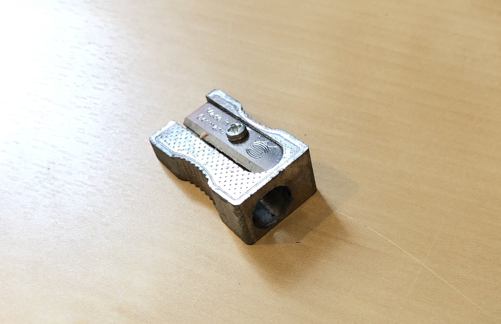
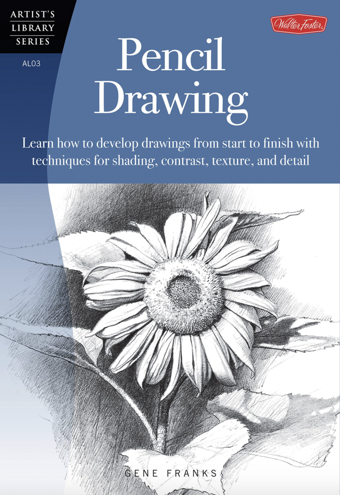

I use Staedtler Mars Lumograph penicls. I use 5 different levels of softness
with 3H, HB, B, 3B, and 5B. I also use another pencil for its eraser.
About Me
Hi! My name is Shane Smolenski, and this is a website I created. I am currently
a junior in college majoring in physics and computer science. I also enjoy pencil
drawing in my free time and made this website as a way to combine some of my interests.
If you have any feedback or questions, please email me at ssmolenski2400@gmail.com.
Enjoy!
Materials
I use the eraser on the end of a pencil for small, strong erasing, a pink block
eraser for larger, strong erasing, and a Faber Castell kneaded eraser for small, light erasing.
I use a metal, one-size sharpener from Derwent
For my main drawings, I use Crescent Rendr No Show Thru Paper. I also keep blank
printer paper for practicing and sketching ideas.
I started using a 12in x 17.5in easel with adjustable angles to improve perspective
and to keep a clear workspace. I use a binder clip to hold my paper in place.
Techniques
- General Drawing Process
- Pencil Grip
- Other notes
In all of my drawings I follow pretty much the same pattern. I begin by very lightly sketching down the basic shapes. This makes sure that all of the angles and proportions are set. I then darken the lines that I am confident in to give a solid outline of my drawing. Next I do my first pass of shading, where I only use one, sometimes two, pencils to uniformly darken the areas that will be further shaded. This begins to give the drawing some depth. I then finish with second, and sometimes third, shading rounds where I use the full range of pencils to create deeper contrast.
I do the vast majority of my drawing using the under the hand grip. This allows me to make much lighter lines and also gives a more 'drawing' feel rather than hard lines produced in the writing grip. I use this grip for my light and darker outlines and the majority of my shading. The other grip I use is the writing grip, as if I was writing, which uses the tip of the pencil to create much finer and darker lines. I use this for the smallest details and the darkest shading.
I use exclusively the 3H pencil for the first several steps in my process before gradually incorporating
the darker shades.
I use an easel to keep my eye perpendicular to the page to improve perspective and I also rest my phone,
where I keep the image I am drawing, on the ledge.
I use a ruler to measure proportions and line up angles as I look at the image I am drawing but don't
use it to make straight lines.
Other Resources
Some resources that I found really helpful for learning drawing techniques and practicing are:
- Pencil Drawing by Gene Franks 
- The Art and Science of Drawing series on SkillShare